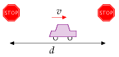
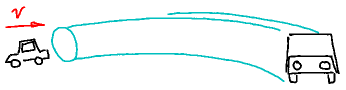
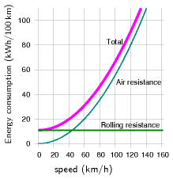
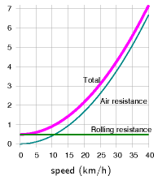
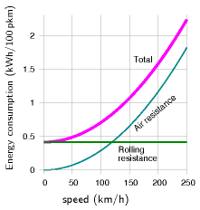
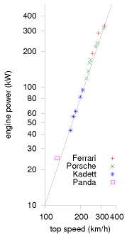
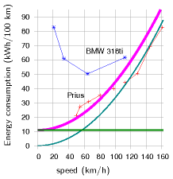
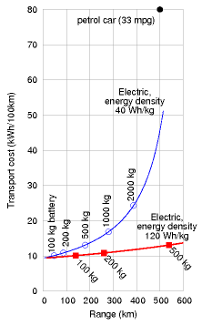
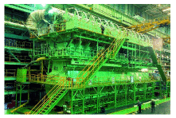

A Cars II
(Figure omitted from this edition: third-party rights.)
Figure A.1.A Peugot 206 has a drag coefficient of 0.33. Photo by Christopher Batt.
We estimated that a car driven 100 km uses about 80 kWh of energy.
Where does this energy go? How does it depend on properties of the car? Could we make cars that are 100 times more efficient? Let’s make a simple cartoon of car-driving, to describe where the energy goes. The energy in a typical fossil-fuel car goes to four main destinations, all of which we will explore:
- speeding up then slowing down using the brakes;
- air resistance;
- rolling resistance;
- heat – 75% of the energy is thrown away as heat, because the energy-conversion chain is inefficient.
The key formula for most of the calculations in this book is:
\[ \text{kinetic\ energy} = \frac{1}{2}mv^{2} \]
For example, a car of mass m = 1000 kg moving at 100 km per hour or v = 28 m/s has an energy of
\[ \frac{1}{2}mv^{2} \simeq \text{390~000~J} \simeq \text{0.1~kWh.} \]

Figure A.2.Our cartoon: a car moves at speed v between stops separated by a distance d.
Initially our cartoon will ignore rolling resistance; we’ll add in this effect later in the chapter.
Assume the driver accelerates rapidly up to a cruising speed v, and maintains that speed for a distance d, which is the distance between traffic lights, stop signs, or congestion events. At this point, he slams on the brakes and turns all his kinetic energy into heat in the brakes. (This vehicle doesn’t have fancy regenerative braking.) Once he’s able to move again, he accelerates back up to his cruising speed, v. This acceleration gives the car kinetic energy; braking throws that kinetic energy away.
Energy goes not only into the brakes: while the car is moving, it makes air swirl around. A car leaves behind it a tube of swirling air, moving at a speed similar to v. Which of these two forms of energy is the bigger: kinetic energy of the swirling air, or heat in the brakes? Let’s work it out.
The car speeds up and slows down once in each duration d/v. The rate at which energy pours into the brakes is:
\[ \begin{matrix} {\frac{\text{kinetic\ energy}}{\text{time\ between\ braking\ events}} = \frac{\frac{\text{1}}{\text{2}}m_{c}v^{2}}{d/v} = \frac{\frac{\text{1}}{\text{2}}m_{c}v^{3}}{d}} \\ \end{matrix} \]
where mc is the mass of the car.

Figure A.3.A car moving at speed v creates behind it a tube of swirling air; the cross-sectional area of the tube is similar to the frontal area of the car, and the speed at which air in the tube swirls is roughly v.
The tube of air created in a time t has a volume Avt, where A is the cross-sectional area of the tube, which is similar to the area of the front view of the car. (For a streamlined car, A is usually a little smaller than the frontal area Acar, and the ratio of the tube’s effective cross-sectional area to the car area is called the drag coefficient cd. Throughout the following equations, A means the effective area of the car, cdAcar.) The tube has mass mair = ρAvt (where ρ is the density of air) and swirls at speed v, so its kinetic energy is:
I’m using this formula: mass = density × volume
The symbol ρ (Greek letter ‘rho’) denotes the density.
\[ \frac{\text{1}}{\text{2}}m_{\text{air}}v^{2} = \frac{\text{1}}{\text{2}}\rho Avt\ v^{2} \]
and the rate of generation of kinetic energy in swirling air is:
\[ \frac{\frac{\text{1}}{\text{2}}\rho Avt\ v^{2}}{t} = \frac{\text{1}}{\text{2}}\rho Av^{3} \]
Figure A.4. To know whether energy consumption is braking-dominated or air-swirling-dominated, we compare the mass of the car with the mass of the tube of air between stop-signs.
Figure A.5. Power consumed by a car is proportional to its cross-sectional area, during motorway driving, and to its mass, during town driving. Guess which gets better mileage – the VW on the left, or the spaceship?
So the total rate of energy production by the car is:
\[ \begin{matrix} {\text{power\ going\ into\ brakes} + \text{power\ going\ into\ swirling\ air}} \\ {= \frac{\text{1}}{\text{2}}{{m_{c}v^{3}}/d} + \frac{\text{1}}{\text{2}}\rho Av^{3}} \\ \end{matrix} \]
Both forms of energy dissipation scale as v3. So this cartoon predicts that a driver who halves his speed v makes his power consumption 8 times smaller. If he ends up driving the same total distance, his journey will take twice as long, but the total energy consumed by his journey will be four times smaller.
Which of the two forms of energy dissipation – brakes or air-swirling – is the bigger? It depends on the ratio of
\[ {\left( {m_{c}/d} \right)/\left( {\rho A} \right)}\text{.} \]
If this ratio is much bigger than 1, then more power is going into brakes; if it is smaller, more power is going into swirling air. Rearranging this ratio, it is bigger than 1 if
\[ m_{c} > \rho Ad\text{.} \]
Now, Ad is the volume of the tube of air swept out from one stop sign to the next. And ρAd is the mass of that tube of air. So we have a very simple situation: energy dissipation is dominated by kinetic-energy-being-dumped-into-the-brakes if the mass of the car is bigger than the mass of the tube of air from one stop sign to the next; and energy dissipation is dominated by making-air-swirl if the mass of the car is smaller (figure A.4).
Let’s work out the special distance d* between stop signs, below which the dissipation is braking-dominated and above which it is air-swirling dominated (also known as drag-dominated). If the frontal area of the car is:
\[ A_{\text{car}} = \text{2\ m\ wide} \times \text{1.5\ m\ high} = \text{3\ m}^{\text{2}} \]
and the drag coefficient is \(c_{\text{d}} = \frac{1}{3}\) and the mass is \(m_{\text{c}} = 1000\text{~kg}\) then the special distance is:
\[ d^{*} = \frac{m_{\text{c}}}{\rho c_{\text{d}}A_{\text{car}}} = \frac{\text{1000\ kg}}{\text{1.3~}{\text{kg}/{\text{m}^{\text{3}} \times \frac{\text{1}}{\text{3}} \times \text{3~}\text{m}^{\text{2}}}}} = \text{750\ m} \]
So “city-driving” is dominated by kinetic energy and braking if the distance between stops is less than 750 m. Under these conditions, it’s a good idea, if you want to save energy:
- to reduce the mass of your car;
- to get a car with regenerative brakes (which roughly halve the energy lost in braking – see Chapter 20); 1 and
- to drive more slowly.
When the stops are significantly more than 750 m apart, energy dissipation is drag-dominated. Under these conditions, it doesn’t much matter what your car weighs. Energy dissipation will be much the same whether the car contains one person or six. Energy dissipation can be reduced:
- by reducing the car’s drag coefficient;
- by reducing its cross-sectional area; or
- by driving more slowly.
| Vehicle | Energy per distance | |
|---|---|---|
| Car at 110 km/h | ↔︎ | 80 kWh/(100 km) |
| Bicycle at 21 km/h | ↔︎ | 2.4 kWh/(100 km) |
| Planes at 900 km/h | A380 | 27 kWh/100 seat-km |
Table A.6. Facts worth remembering: car energy consumption.
The actual energy consumption of the car will be the energy dissipation in equation (A.2), cranked up by a factor related to the inefficiency of the engine and the transmission. Typical petrol engines are about 25% efficient, 2 so of the chemical energy that a car guzzles, three quarters is wasted in making the car’s engine and radiator hot, and just one quarter goes into “useful” energy:
\[ \text{total\ power\ of\ car} \simeq 4\left\lbrack {\frac{\text{1}}{\text{2}}m_{\text{c}}v^{3}/d + \frac{\text{1}}{\text{2}}\rho Av^{3}} \right\rbrack \]
Let’s check this theory of cars by plugging in plausible numbers for motorway driving. Let v = 70 miles per hour = 110 km/h = 31 m/s and \({A = c_{\text{d}}A_{\text{car}} = \text{1\ m}^{2}}\text{.}\) The power consumed by the engine is estimated to be roughly
\[ 4 \times \frac{\text{1}}{\text{2}}\rho Av^{3} = 2 \times 1.3{\text{~kg}/\text{m}}^{\text{3}} \times \text{1}\text{~m}^{\text{2}} \times \left( 31\text{~m}/\text{s} \right)^{\text{3}} = 80\text{~kW} \]
| Drag coefficient, cd | |
|---|---|
| Cars | |
| Honda Insight | 0.25 |
| Prius | 0.26 |
| Renault 25 | 0.28 |
| Honda Civic (2006) | 0.31 |
| VW Polo GTi | 0.32 |
| Peugeot 206 | 0.33 |
| Ford Sierra | 0.34 |
| Audi TT | 0.35 |
| Honda Civic (2001) | 0.36 |
| Citroën 2CV | 0.51 |
| Other | |
| Cyclist | 0.9 |
| Long-distance coach | 0.425 |
| Planes | |
| Cessna | 0.027 |
| Learjet | 0.022 |
| Boeing 747 | 0.031 |
| Drag area, cdAcar (m2) | |
|---|---|
| Land Rover Discovery | 1.6 |
| Volvo 740 | 0.81 |
| Typical car | 0.8 |
| Honda Civic | 0.68 |
| VW Polo GTi | 0.65 |
| Honda Insight | 0.47 |
Table A.7. Drag coefficients and drag areas. The two panels measure different things: the coefficient is dimensionless and describes the shape alone, while the drag area multiplies it by the frontal area and so is what actually enters the power calculation above. A typical car’s 0.8 m2 is the figure rounded to 1 m2 in the worked example.
If you drive the car at this speed for one hour every day, then you travel 110 km and use 80 kWh of energy per day. If you drove at half this speed for two hours per day instead, you would travel the same distance and use up 20 kWh of energy. This simple theory seems consistent with the mileage figures for cars quoted in Chapter 3. Moreover, the theory gives insight into how the energy consumed by your car could be reduced. The theory has a couple of flaws which we’ll explore in a moment.
Could we make a new car that consumes 100 times less energy and still goes at 70mph? No. Not if the car has the same shape. On the motorway at 70mph, the energy is going mainly into making air swirl. Changing the materials the car is made from makes no difference to that. A miraculous improvement to the fossil-fuel engine could perhaps boost its efficiency from 25% to 50%, bringing the energy consumption of a fossil-fuelled car down to roughly 40 kWh per 100 km.
Electric vehicles have some wins: while the weight of the energy store, per useful kWh stored, is about 25 times bigger than that of petrol, the weight of an electric engine can be about 8 times smaller. 3 And the energy-chain in an electric car is much more efficient: electric motors can be 90% efficient.
We’ll come back to electric cars in more detail towards the end of this chapter.
Bicycles and the scaling trick
Here’s a fun question: what’s the energy consumption of a bicycle, in kWh per 100 km? Pushing yourself along on a bicycle requires energy for the same reason as a car: you’re making air swirl around. Now, we could do all the calculations from scratch, replacing car-numbers by bike-numbers. But there’s a simple trick we can use to get the answer for the bike from the answer for the car. The energy consumed by a car, per distance travelled, is the power-consumption associated with air-swirling,
\[ 4 \times \frac{\text{1}}{\text{2}}\rho Av^{3} \]
divided by the speed, v; that is,
\[ \text{energy\ per\ distance} = 4 \times \frac{\text{1}}{\text{2}}\rho Av^{2} \]
The “4” came from engine inefficiency; ρ is the density of air; the area \(A = c_{\text{d}}A_{\text{car}}\) is the effective frontal area of a car; and v is its speed. Now, we can compare a bicycle with a car by dividing \(4 \times \frac{\text{1}}{\text{2}}\rho Av^{2}\) for the bicycle by \(4 \times \frac{\text{1}}{\text{2}}\rho Av^{2}\) for the car. All the fractions and ρ cancel, if the efficiency of the carbon-powered bicyclist’s engine is similar to the efficiency of the carbon-powered car engine (which it is). The ratio is:
\[ \frac{\text{energy\ per\ distance\ of\ bike}}{\text{energy\ per\ distance\ of\ car}} = \frac{c_{\text{d}}^{\text{bike}}A_{\text{bike}}v_{\text{bike}}^{2}}{c_{\text{d}}^{\text{car}}A_{\text{car}}v_{\text{car}}^{2}} \]
The trick we are using is called “scaling.” If we know how energy consumption scales with speed and area, then we can predict energy consumption of objects with completely different speeds and areas. Specifically, let’s assume that the area ratio is
\[ \frac{A_{\text{bike}}}{A_{\text{car}}} = \frac{1}{4} \]
(Four cyclists can sit shoulder to shoulder in the width of one car.) Let’s assume the bike is not very well streamlined:
\[ \frac{c_{\text{d}}^{\text{bike}}}{c_{\text{d}}^{\text{car}}} = \frac{1}{\frac{\text{1}}{\text{3}}} \]
And let’s assume the speed of the bike is 21 km/h (13 miles per hour), so
\[ \frac{v_{\text{bike}}}{v_{\text{car}}} = \frac{1}{5} \]
Then
\[ \begin{matrix} \\ {= \left( {\frac{c_{\text{d}}^{\text{bike}}}{c_{\text{d}}^{\text{car}}}\frac{A_{\text{bike}}}{A_{\text{car}}}} \right)\left( \frac{v_{\text{bike}}}{v_{\text{car}}} \right)^{2}} \\ {= \left( \frac{3}{4} \right) \times \left( \frac{1}{5} \right)^{2}} \\ {= \frac{3}{100}} \\ \end{matrix} \]
So a cyclist at 21 km/h consumes about 3% of the energy per kilometre of a lone car-driver on the motorway – about 2.4 kWh per 100 km.
If you would like a vehicle whose fuel efficiency is 30 times better than a car’s, it’s simple: ride a bike.
What about rolling resistance?
Some things we’ve completely ignored so far are the energy consumed in the tyres and bearings of the car, the energy that goes into the noise of wheels against asphalt, the energy that goes into grinding rubber off the tyres, and the energy that vehicles put into shaking the ground. Collectively, these forms of energy consumption are called rolling resistance. The standard model of rolling resistance asserts that the force of rolling resistance is simply proportional to the weight of the vehicle, independent of the speed. The constant of proportionality is called the coefficient of rolling resistance, Crr. Table A.8 gives some typical values.
| wheel | Crr |
|---|---|
| train (steel on steel) | 0.002 |
| bicycle tyre | 0.005 |
| truck rubber tyres | 0.007 |
| car rubber tyres | 0.010 |
Table A.8. The rolling resistance is equal to the weight multiplied by the coefficient of rolling resistance, Crr. The rolling resistance includes the force due to wheel flex, friction losses in the wheel bearings, shaking and vibration of both the roadbed and the vehicle (including energy absorbed by the vehicle’s shock absorbers), and sliding of the wheels on the road or rail. The coefficient varies with the quality of the road, with the material the wheel is made from, and with temperature. The numbers given here assume smooth roads. [2bhu35]
Cars
The coefficient of rolling resistance for a car is about 0.01. The effect of rolling resistance is just like perpetually driving up a hill with a slope of one in a hundred. So rolling friction is about 100 newtons per ton, independent of speed. You can confirm this by pushing a typical one-ton car along a flat road. Once you’ve got it moving, you’ll find you can keep it moving with one hand. (100 newtons is the weight of 100 apples.) So at a speed of 31 m/s (70 mph), the power required to overcome rolling resistance, for a one-ton vehicle, is
\[ \text{force} \times \text{velocity} = \left( \text{100\ newtons} \right) \times \left( \text{31\ m/s} \right) = \text{3100\ W;} \]
which, allowing for an engine efficiency of 25%, requires 12 kW of power to go into the engine; whereas the power required to overcome drag was estimated above to be 80 kW. So, at high speed, about 15% of the power is required for rolling resistance.

Figure A.9. Simple theory of car fuel consumption (energy per distance) when driving at steady speed. Assumptions: the car’s engine uses energy with an efficiency of 0.25, whatever the speed; cdAcar = 1 m2; mcar = 1000 kg; and Crr = 0.01.

Figure A.10. Simple theory of bike fuel consumption (energy per distance). Vertical axis is energy consumption in kWh per 100 km. Assumptions: the bike’s engine (that’s you!) uses energy with an efficiency of 0.25; 4 the drag-area of the cyclist is 0.75 m2; the cyclist+bike’s mass is 90 kg; and Crr = 0.005.
Figure A.11.Simple theory of train energy consumption, per passenger, for an eight-carriage train carrying 584 passengers. Vertical axis is energy consumption in kWh per 100 p-km. Assumptions: the train’s engine uses energy with an efficiency of 0.90; cdAtrain = 11 m2; mtrain = 400 000 kg; and Crr = 0.002.

Figure A.9 shows the theory of fuel consumption (energy per unit distance) as a function of steady speed, when we add together the air resistance and rolling resistance.
The speed at which a car’s rolling resistance is equal to air resistance is given by
\[ C_{\text{rr}}m_{\text{c}}g = \frac{1}{2}\rho c_{\text{d}}Av^{2} \]
that is,
\[ v = \sqrt{2\frac{C_{\text{rr}}m_{\text{c}}g}{\rho c_{\text{d}}A}} = \text{7\ m/s} = \text{16\ miles\ per\ hour.} \]

Figure A.13. Powers of cars (kW) versus their top speeds (km/h). Both scales are logarithmic. The power increases as the third power of the speed. To go twice as fast requires eight times as much engine power. From Tennekes (1997).

Figure A.12. Current cars’ fuel consumptions do not vary as speed squared. Prius data from B.Z. Wilson; BMW data from Phil C. Stuart. The smooth curve shows what a speed-squared curve would look like, assuming a drag-area of 0.6 m2. 5
Bicycles
For a bicycle (m = 90 kg, A= 0.75 m2), the transition from rolling-resistance-dominated cycling to air-resistance-dominated cycling takes place at a speed of about 12 km/h. At a steady speed of 20 km/h, cycling costs about 2.2 kWh per 100 km. By adopting an aerodynamic posture, you can reduce your drag area and cut the energy consumption down to about 1.6 kWh per 100 km.
Trains
For an eight-carriage train as depicted in figure 20.4 (m = 400 000 kg, A = 11 m2), the speed above which air resistance is greater than rolling resistance is
\[ v = 33\text{~m/s} = \text{74\ miles\ per\ hour.} \]
For a single-carriage train (m = 50 000 kg, A = 11 m2) , the speed above which air resistance is greater than rolling resistance is
\[ v = 12\text{~m/s} = \text{26\ miles\ per\ hour.} \]
Dependence of power on speed
When I say that halving your driving speed should reduce fuel consumption (in miles per gallon) to one quarter of current levels, some people feel sceptical. They have a point: most cars’ engines have an optimum revolution rate, and the choice of gears of the car determines a range of speeds at which the optimum engine efficiency can be delivered. If my suggested experiment of halving the car’s speed takes the car out of this designed range of speeds, the consumption might not fall by as much as four-fold. My tacit assumption that the engine’s efficiency is the same at all speeds and all loads led to the conclusion that it’s always good (in terms of miles per gallon) to travel slower; but if the engine’s efficiency drops off at low speeds, then the most fuel-efficient speed might be at an intermediate speed that makes a compromise between going slow and keeping the engine efficient. For the BMW 318ti in figure A.12, for example, the optimum speed is about 60 km/h. But if society were to decide that car speeds should be reduced, there is nothing to stop engines and gears being redesigned so that the peak engine efficiency was found at the right speed. As further evidence that the power a car requires really does increase as the cube of speed, figure A.13 shows the engine power versus the top speeds of a range of cars. The line shows the relationship “power proportional to v3.”
Electric cars: is range a problem?
People often say that the range of electric cars is not big enough. Electric car advocates say “no problem, we can just put in more batteries” – and that’s true, but we need to work out what effect the extra batteries have on the energy consumption. The answer depends sensitively on what energy density we assume the batteries deliver: for an energy density of 40 Wh/kg (typical of lead-acid batteries), we’ll see that it’s hard to push the range beyond 200 or 300 km; but for an energy density of 120 Wh/kg (typical of various lithium-based batteries), a range of 500 km is easily achievable.

Figure A.14. Theory of electric car range (horizontal axis) and transport cost (vertical axis) as a function of battery mass, for two battery technologies. A car with 500 kg of old batteries, with an energy density of 40 Wh per kg, has a range of 180 km. With the same weight of modern batteries, delivering 120 Wh per kg, an electric car can have a range of more than 500 km. Both cars would have an energy cost of about 13 kWh per 100 km. These numbers allow for a battery charging efficiency of 85%.
Let’s assume that the mass of the car and occupants is 740 kg, without any batteries. In due course we’ll add 100 kg, 200 kg, 500 kg, or perhaps 1000 kg of batteries. Let’s assume a typical speed of 50 km/h (30 mph); a drag-area of 0.8 m2; a rolling resistance of 0.01; a distance between stops of 500 m; an engine efficiency of 85%; and that during stops and starts, regenerative braking recovers half of the kinetic energy of the car. Charging up the car from the mains is assumed to be 85% efficient. Figure A.14 shows the transport cost of the car versus its range, as we vary the amount of battery on board. The upper curve shows the result for a battery whose energy density is 40 Wh/kg (old-style lead-acid batteries). The range is limited by a wall at about 500 km. To get close to this maximum range, we have to take along comically large batteries: for a range of 400 km, for example, 2000 kg of batteries are required, and the transport cost is above 25 kWh per 100 km. If we are content with a range of 180 km, however, we can get by with 500 kg of batteries. Things get much better when we switch to lighter lithium-ion batteries. At an energy density of 120 Wh/kg, electric cars with 500 kg of batteries can easily deliver a range of 500 km. The transport cost is predicted to be about 13 kWh per 100 km.
It thus seems to me that the range problem has been solved by the advent of modern batteries. It would be nice to have even better batteries, but an energy density of 120 Wh per kg is already good enough, as long as we’re happy for the batteries in a car to weigh up to 500 kg. In practice I imagine most people would be content to have a range of 300 km, which can be delivered by 250 kg of batteries. If these batteries were divided into ten 25 kg chunks, separately unpluggable, then a car user could keep just four of the ten chunks on board when he’s doing regular commuting (100 kg gives a range of 140 km); and collect an extra six chunks from a battery-recharging station when he wants to make longer-range trips. During long-range trips, he would exchange his batteries for a fresh set at a battery-exchange station every 300 km or so.
The model survived; the cars got heavier
A section added in the 2026 revision. This chapter’s model has two terms — the energy to shove air out of the way, which scales with frontal area and the square of speed, and the energy to accelerate a mass repeatedly, which scales with weight. Neither has been revised and neither will be. What is worth recording is what the model predicted about the eighteen years since, because it predicted them rather well.
The electric car did what the model says it should. MacKay’s petrol car throws away three-quarters of its fuel as heat before any of it reaches the road. Remove that and the same vehicle, on the same journey against the same air, should need roughly a quarter to a fifth as much energy. Chapter 20 records the measurement: 21 kWh per 100 km as a real-world European average across 342 electric cars, against this chapter’s 80 kWh per 100 km petrol baseline. A factor of 3.8 — squarely inside the range the model predicts, and arrived at by measurement rather than by hope.
And the model equally predicts why the gain has been partly eaten. Both terms punish size: air resistance is proportional to frontal area, and the stop-start term to mass. Over the same period vehicles got taller and heavier — sport-utility vehicles passed half of world car sales, and the average new car in Europe gained something like two hundred kilograms. A model with area and mass in it says efficiency gains will be spent on size unless something stops them, and that is what happened.6
One term this chapter does not have. An electric car carries three to five hundred kilograms of battery, which the model taxes through the mass term while the thermal saving is not in the model at all. On balance the trade is overwhelmingly favourable — that is what 21 against 80 says — but it is why a heavy electric car is not four times better than a light petrol one.
The chapter’s real lesson is unchanged, and worth restating in an edition full of revised numbers: the two terms are physics and the rest is choice. A vehicle that is smaller, lower and lighter uses less energy whatever is under the bonnet, and no drivetrain rescues a badly shaped one.
Notes and further reading

Figure A.15. The Wartsila-Sulzer RTA96-C 14-cylinder two-stroke diesel engine. 27 m long and 13.5 m high. www.wartsila.com
Further reading: Gabrielli and von Kármán (1950).
Regenerative brakes roughly halve the energy lost in braking. Source: E4tech (2007).↩︎
Typical petrol engines are about 25% efficient. Encarta [6by8x] says “The efficiencies of good modern Otto-cycle engines range between 20 and 25%.” The petrol engine of a Toyota Prius, famously one of the most efficient car engines, uses the Atkinson cycle instead of the Otto cycle; it has a peak power output of 52 kW and has an efficiency of 34% when delivering 10 kW [348whs]. The most efficient diesel engine in the world is 52%-efficient, but it’s not suitable for cars as it weighs 2300 tons: the Wartsila–Sulzer RTA96-C turbocharged diesel engine (figure A.15) is intended for container ships and has a power output of 80 MW.↩︎
Electric engines can be about 8 times lighter than petrol engines. A 4-stroke petrol engine has a power-to-mass ratio of roughly 0.75 kW/kg. The best electric motors have an efficiency of 90% and a power-to-mass ratio of 6 kW/kg. So replacing a 75 kW petrol engine with a 75 kW electric motor saves 85 kg in weight. Sadly, the power to weight ratio of batteries is about 1 kW per kg, so what the electric vehicle gained on the motor, it loses on the batteries.↩︎
The bike’s engine uses energy with an efficiency of 0.25. This and the other assumptions about cycling are confirmed by di Prampero et al. (1979). The drag-area of a cyclist in racing posture is cdA = 0.3 m2. The rolling resistance of a cyclist on a high-quality racing cycle (total weight 73 kg) is 3.2 N.↩︎
Figure A.12. Prius data from B. Z. Wilson [home.hiwaay.net/~bzwilson/prius/]. BMW data from Phil C. Stuart [www.randomuseless.info/318ti/economy.html].↩︎
The share of sport-utility vehicles in world car sales passed 50% in the mid-2020s on the International Energy Agency’s classification, up from roughly a fifth in 2010; that classification is broad and includes crossovers not much larger than the saloons they replaced, so it overstates the change in frontal area. European new-car kerb mass has risen roughly 10–15% since 2008 on manufacturer-reported figures, part of it safety and emissions equipment rather than size, and part of the recent rise battery mass in electrified models. Both are indicative, and the point turns on neither, since the model’s dependence on area and mass is not in dispute.↩︎